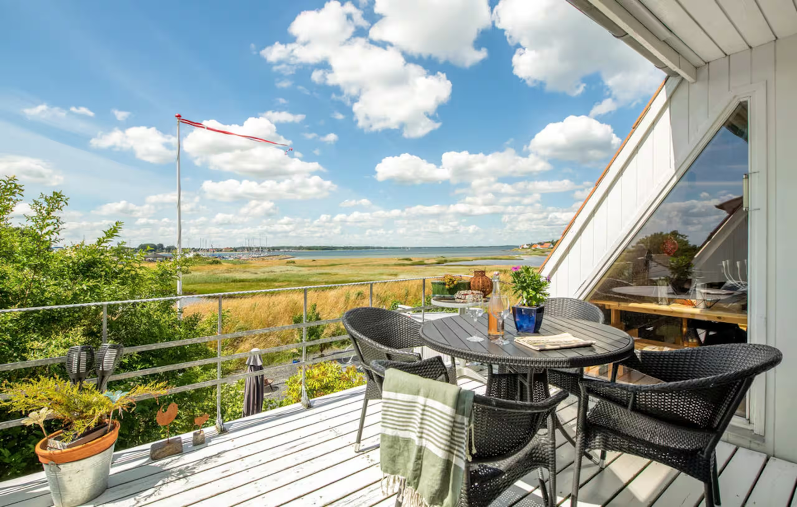
„Statt Silvester in der Stadt: eine kleine dänische Insel mit Hafenblick, Kamin, Strand und richtig viel gemeinsamer Zeit.“
„House on Aarø – with built in peace and quiet.“ Ein ganzes Haus direkt auf der Insel, nur 5 Gehminuten von der Fähre, mit Panoramablick auf Hafen und Kleinen Belt.
Zwei Kaminöfen plus Wärmepumpe – warm und gemütlich auch im Winter.
Oben raus auf den Balkon – Blick über Salzwiesen, Hafen und Sonnenuntergang.
Offen und gut ausgestattet – perfekt für gemeinsame Kochabende.
Grill, Feuerschale und Liegen im Hof – Steinstrand gleich in der Nähe.
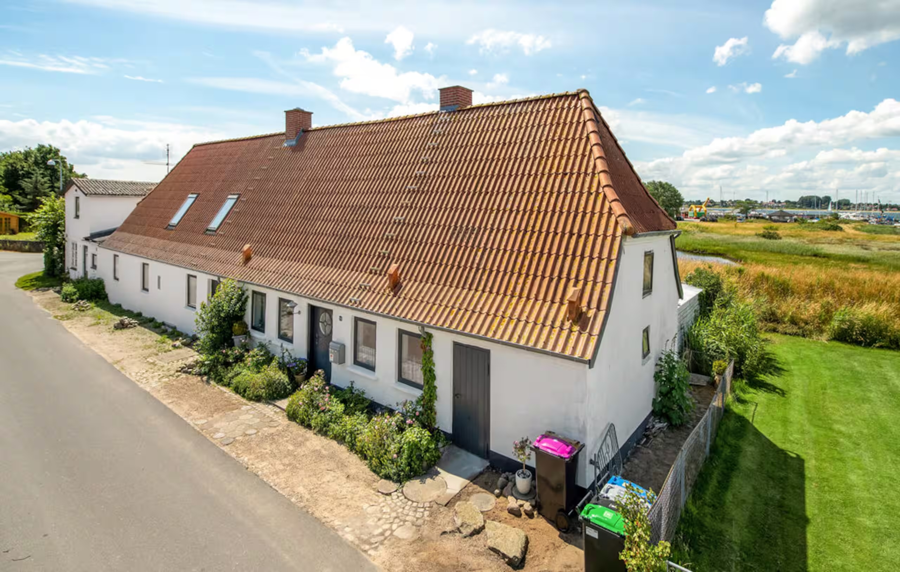
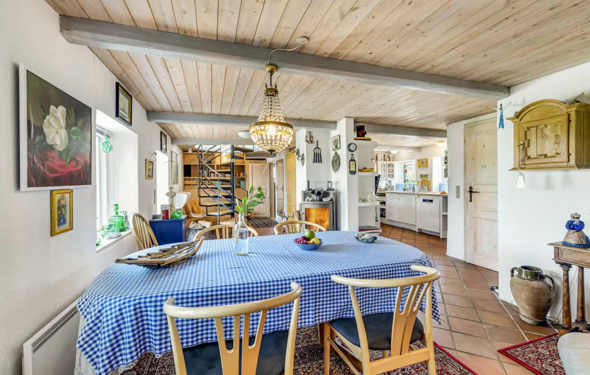
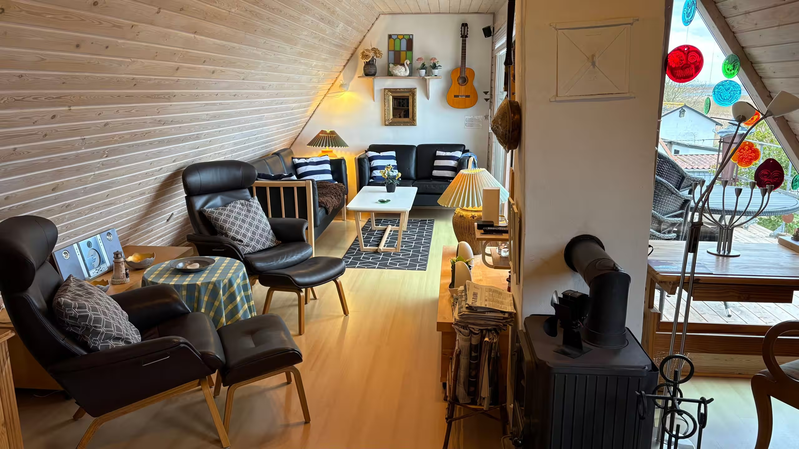
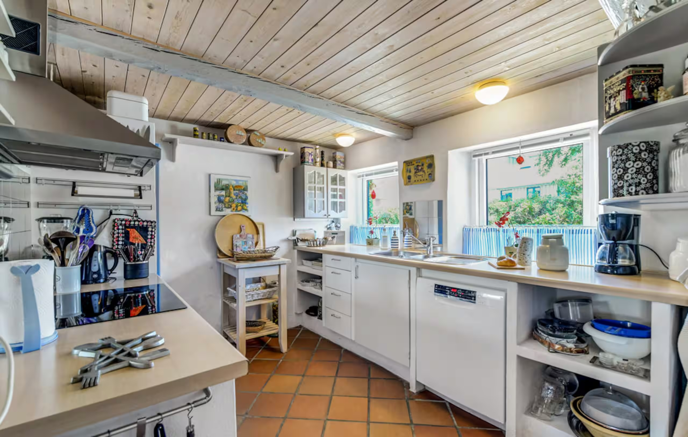
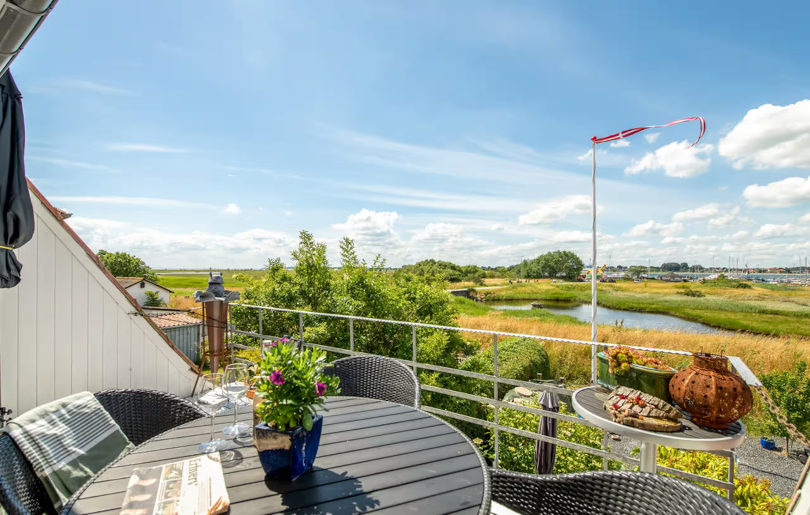
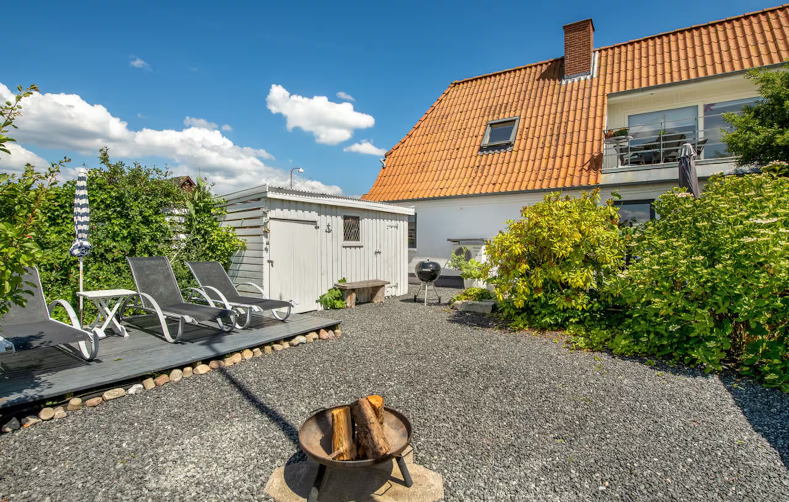
Drei Doppelbetten – zwei im Erdgeschoss, eine gemütliche Nische oben.
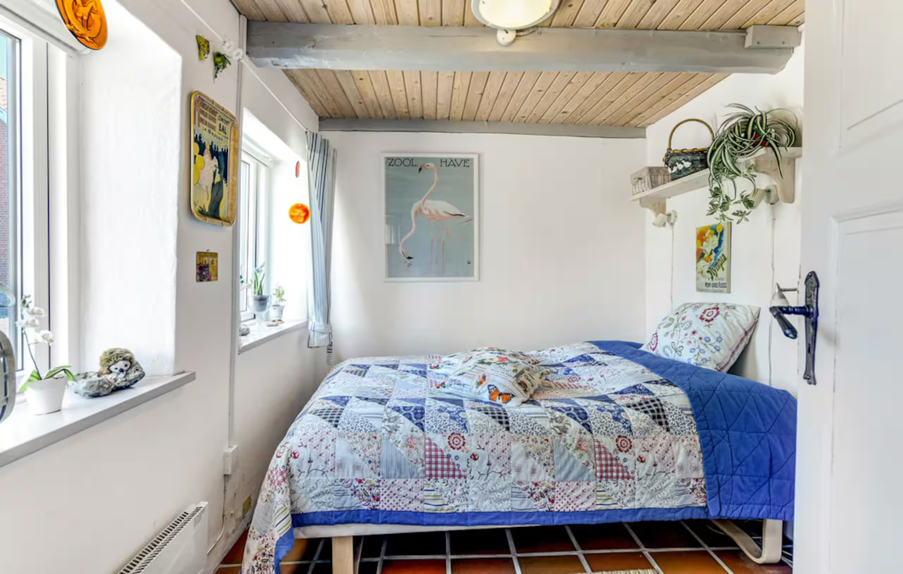
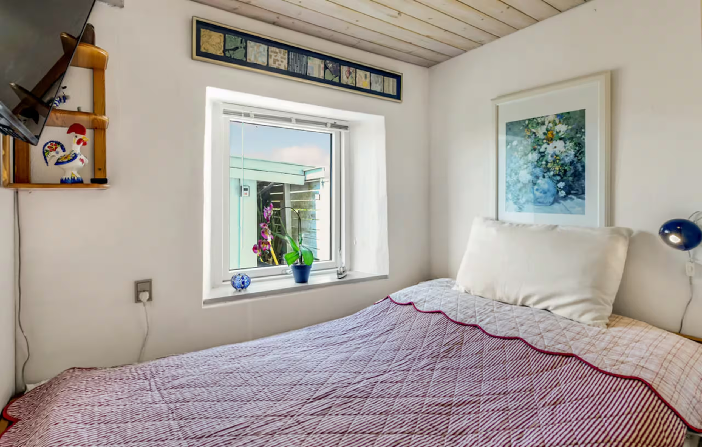
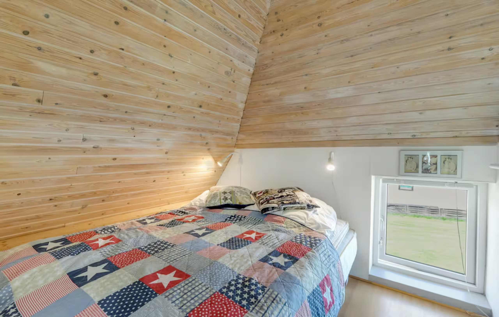
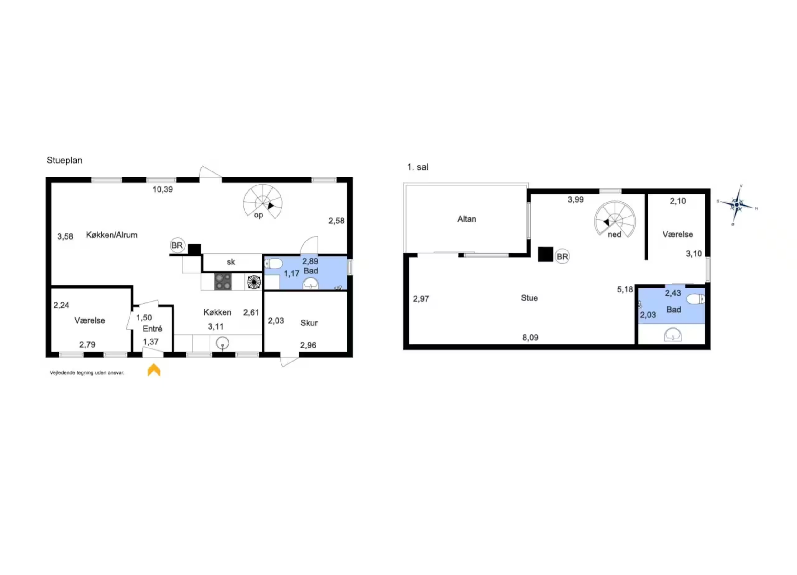
Mehrere Gäste waren schon mehrfach da. Gelobt werden vor allem Aussicht, Lage und die herzliche Gastgeberin.
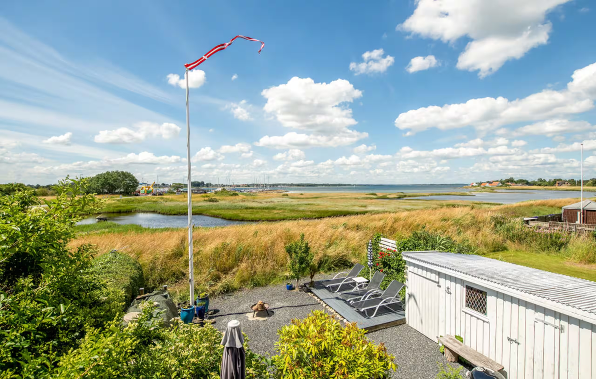
▶ Aarø aus der LuftNur 5,7 km², rund 150 Einwohner, mitten im Kleinen Belt. Flache Landschaft mit Stränden, Deichen, Salzwiesen und einem EU-geschützten Vogelreservat. Wie geschaffen zum Entschleunigen.
Årø Vingård – dänischer Wein seit 2004, mit Verkostung & Weinbergspaziergang. aaro-vin.dk →
2,5 km Landzunge, Vogelschutzgebiet mit Galloway-Rindern – im Winter zugänglich.
An der Südspitze – besonders schön im Licht des Sonnenuntergangs.
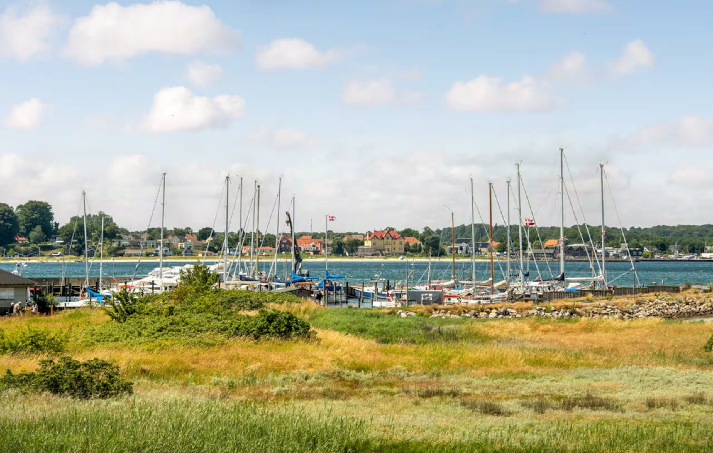
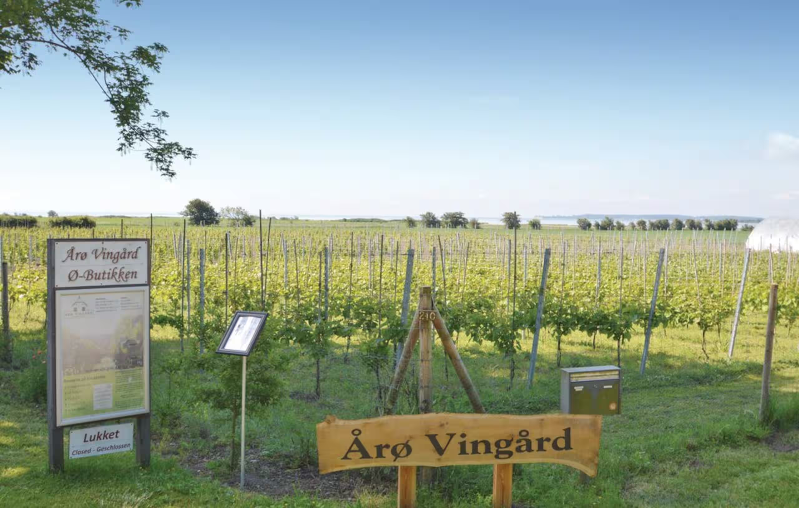
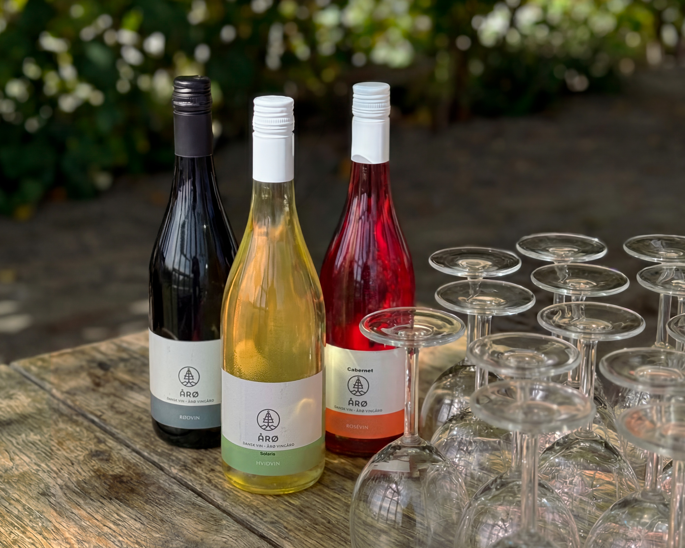
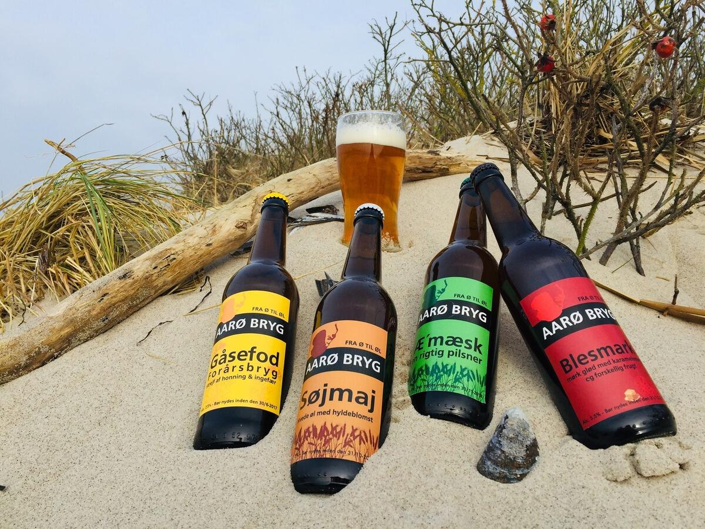
Kein Pflichtplan – nur Ideen. Das Wetter entscheidet mit.
Über Strände, Deiche und Küstenwege – zum Leuchtturm und nach Aarø Kalv.
Gemeinsam kochen, Glühwein, Spiele, Filme – echte Hygge.
Weingut & Inselbrauerei sind im Winter vermutlich geschlossen. Wir können aber vorab anfragen, ob es zu Silvester/Neujahr Sonderöffnungszeiten gibt.
Haderslev (Dom, Cafés), Christiansfeld (UNESCO) oder Sønderborg.
Nach Weihnachten mit dem Auto hoch nach Aarøsund, dann rüber mit der kleinen Inselfähre – nur ca. 8 Minuten Überfahrt. Das Haus liegt direkt am Hafen.
Wenn die Idee gefällt, klären wir als Nächstes: